Your Personal AI Coach to Crack BPSC · bilingual (English + हिंदी) · works offline · runs on your own server
1. Getting started
शुरुआत कैसे करें
Open the app in your browser (your deployed URL, e.g. https://bpsc.example.com).
Pick your language with the EN / हिंदी toggle at the bottom of the sidebar — every chapter, quiz and screen is fully bilingual.
Go to Settings and set your exam date (for the countdown) and, if you want the AI features, your AI provider + API key (see §15).
Install it as an app: in Chrome/Edge use Install app from the address bar. Chapters, quizzes and revision then work offline.
No account is needed. All your progress (streaks, scores, revision schedule, settings) is stored in your own browser.
2. Dashboard
डैशबोर्ड
Your daily starting point: study streak, chapters completed, days to exam, average accuracy, a revision-due reminder, and one-click cards to every module.
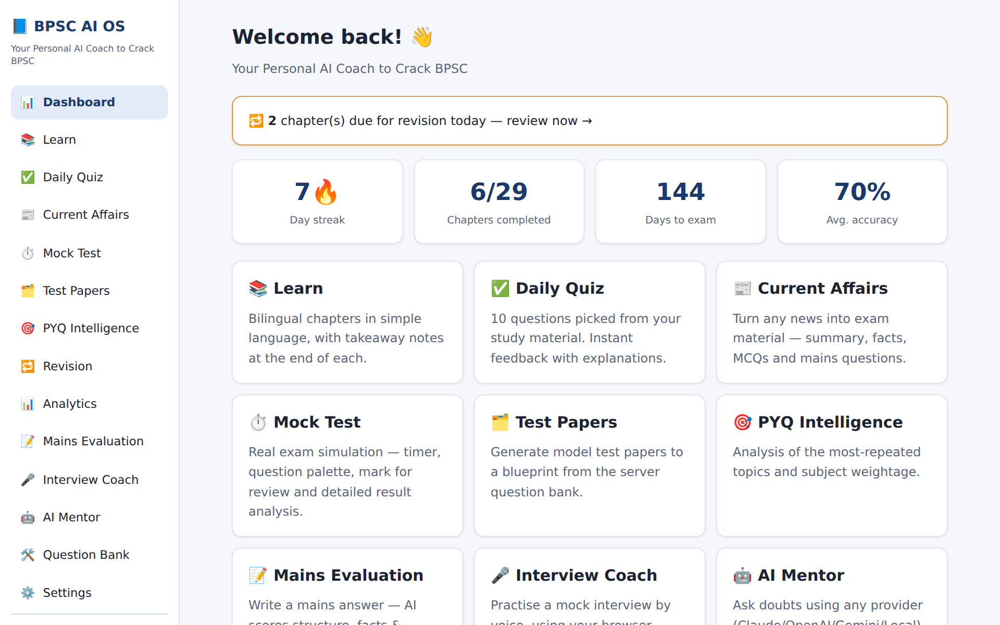
3. Learn — chapters
अध्ययन — अध्याय
29 bilingual chapters across 7 subjects (Polity, History, Geography, Economy, Science, Bihar Special, Mental Ability) covering the full BPSC Prelims syllabus — written in simple language with maps, infographics, timelines and memory tricks.
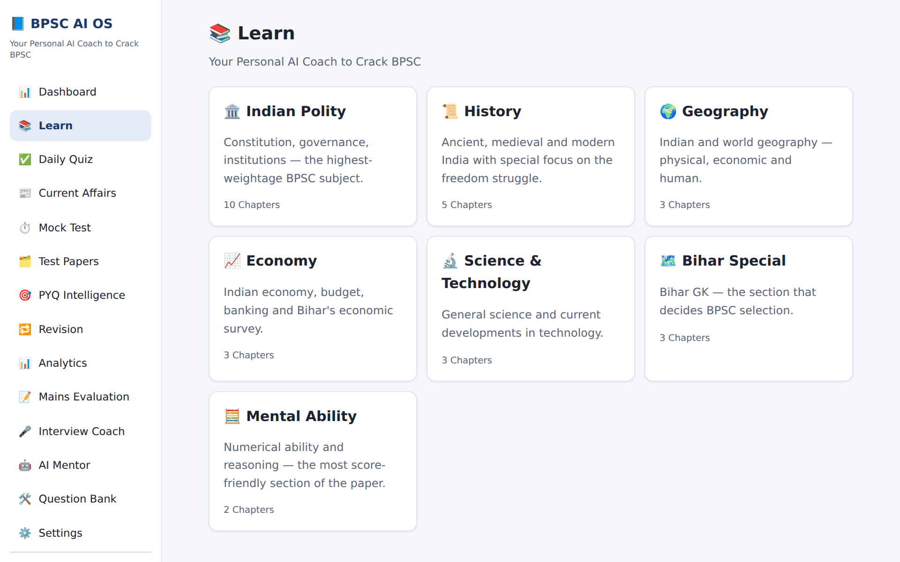
Inside a chapter
🔊 Listen — read-aloud in English or Hindi (browser voice).
📄 Export PDF — print-friendly copy of the chapter.
🚩 Report a mistake — flag any error; it is saved and can be filed on GitHub.
Takeaways box at the end — the chapter compressed into revision points.
Practice questions — a chapter quiz with instant explanations.
Mark as complete — logs your streak and auto-enrols the chapter into Smart Revision.
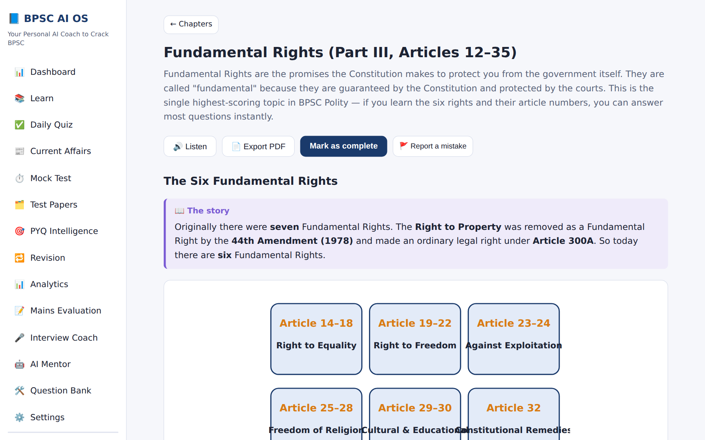
4. Daily Quiz
दैनिक क्विज़
10 questions selected from your material — weak topics are prioritised automatically. Every answer shows an instant explanation.
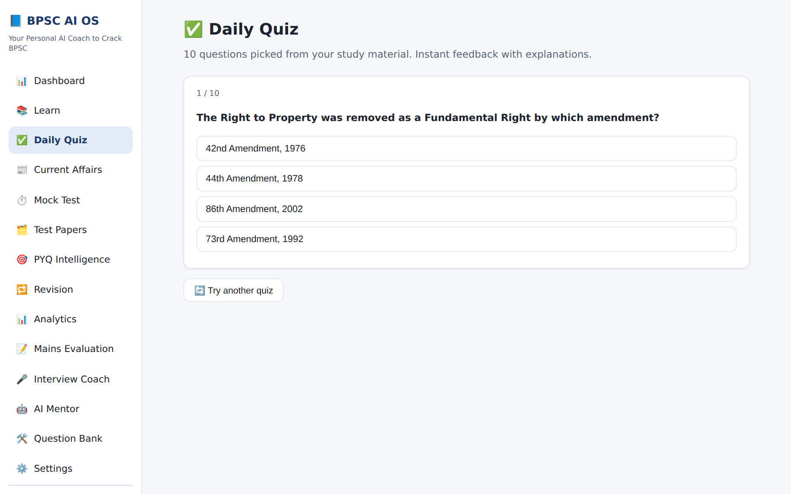
5. Current Affairs & Live News
करेंट अफेयर्स व लाइव समाचार
Three tabs:
📚 Digest — curated, exam-ready items (summary → background → static-GK link → facts → MCQs → mains questions), filterable by category, exportable to PDF.
🗞️ Live News — the server fetches headlines from PIB feeds daily. Click ✨ Convert to exam material on any item.
✨ News → Exam Material — paste (or send from Live News) any news text; your AI provider turns it into complete exam material.
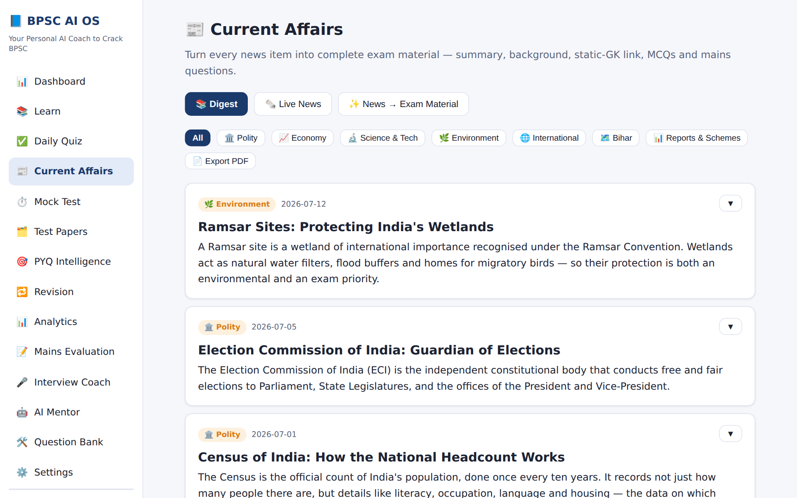
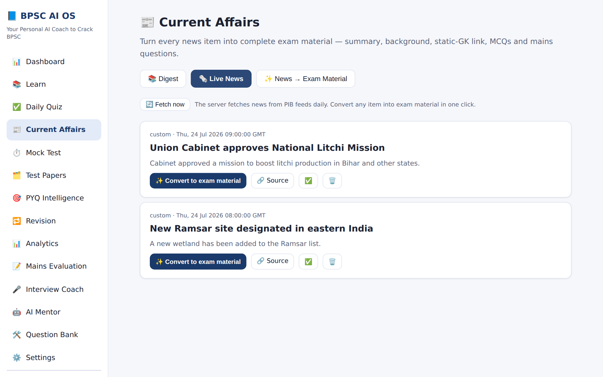
6. Mock Test
मॉक टेस्ट
A real exam simulation from the built-in bank: countdown timer (auto-submits), question palette, mark-for-review, configurable negative marking (default 0 = the real BPSC prelims pattern), and a full result analysis.
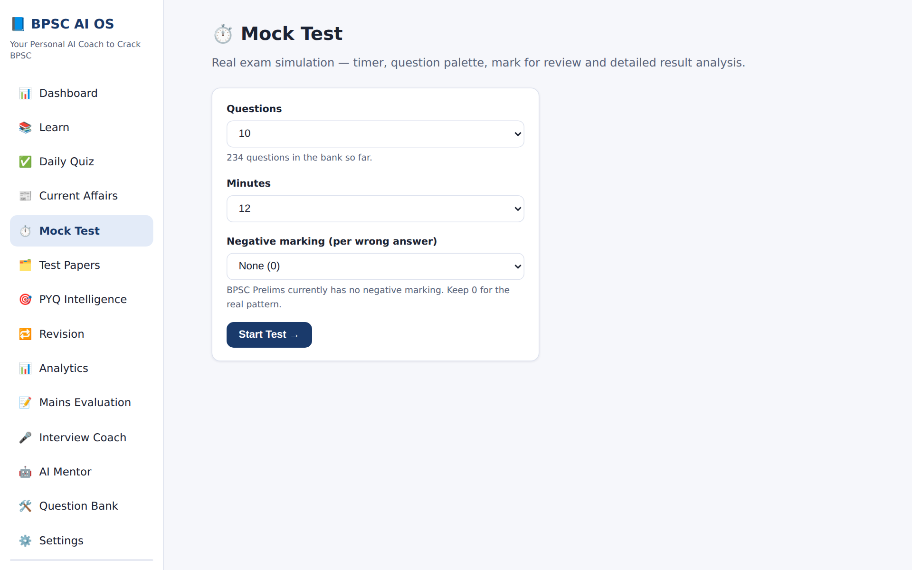
7. Model Test Papers
मॉडल टेस्ट पेपर
Generated fresh from the server question bank — so papers get richer as the bank grows. Choose a preset blueprint (Quick 30, Prelims GS 50, Bihar Special 20) or build your own paper: questions per subject, duration, negative marking. Results include subject-wise breakdown and full answer review.
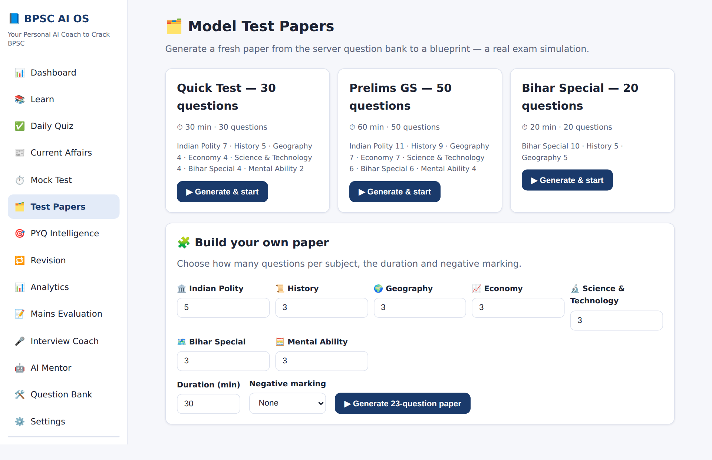
8. PYQ Intelligence & Bank Practice
PYQ इंटेलिजेंस व बैंक अभ्यास
Instead of storing previous-year questions, the app analyses them: subject weightage bars and a topic-priority table (Very High / High / Medium) computed live from the question bank. Every topic row has ✏️ Practice (drill questions on exactly that topic) and links to the chapters to revisit.
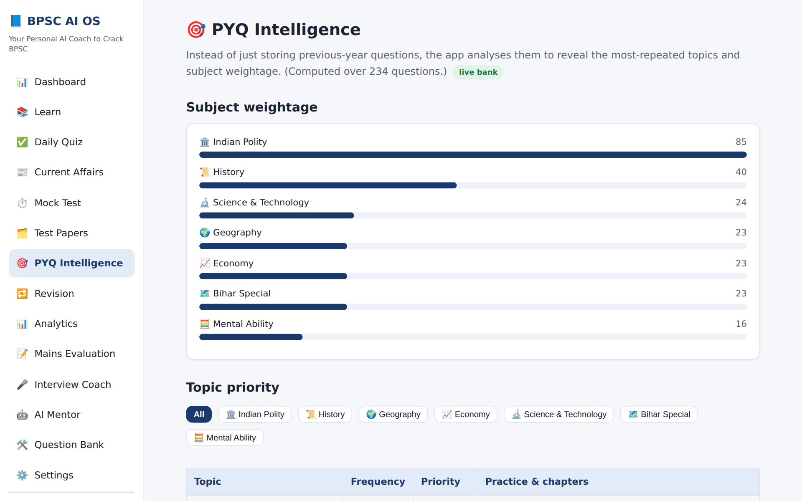
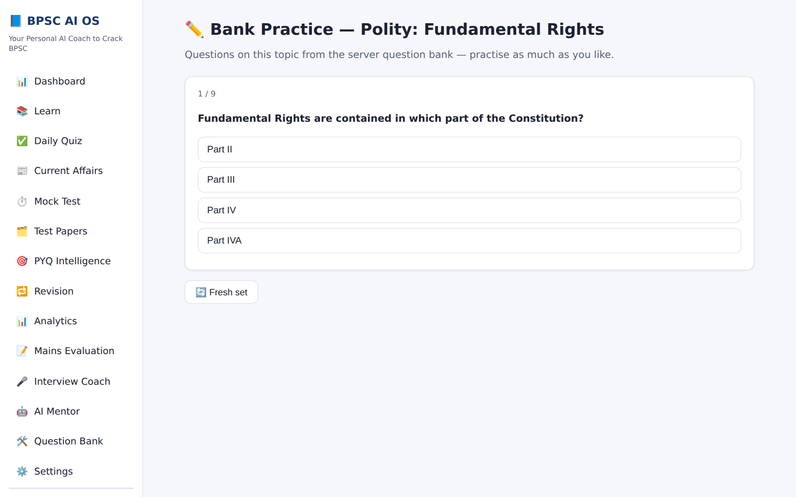
9. Smart Revision
स्मार्ट रिवीजन
Spaced repetition on the 1 → 3 → 7 → 15 → 30 → 60 day ladder. Chapters enrol automatically when you mark them complete. Try to recall first, reveal the takeaways, then grade yourself (Again / Hard / Good / Easy) — the schedule adapts. Nothing gets forgotten.
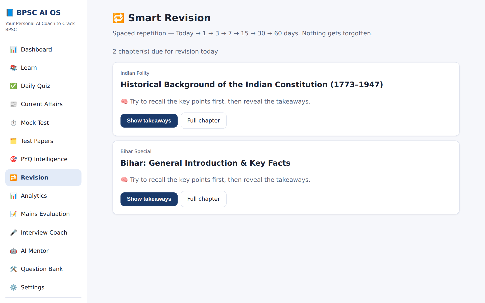
10. Analytics & Readiness Score
विश्लेषण व तैयारी स्कोर
A transparent Readiness Score = 0.4 × syllabus coverage + 0.35 × accuracy + 0.25 × revision compliance — every part is something you can move. Below it: subject completion bars, and weak areas with an improvement plan (practise the topic from the bank, or reread the mapped chapters).
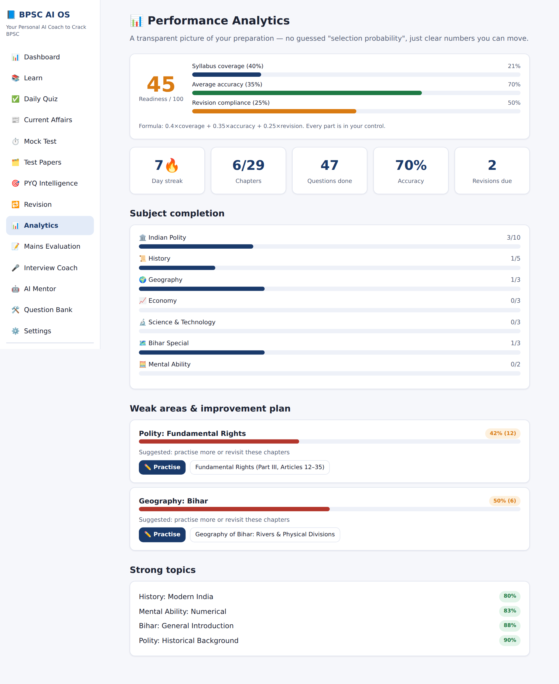
11. Mains Answer Evaluation
मुख्य परीक्षा उत्तर मूल्यांकन
Type your answer or📷 upload a photo of your handwritten answer (transcribed by your AI provider's vision model). The AI grades it like a BPSC examiner: estimated marks /15, dimension-wise bars (structure, content, relevance, language, presentation), strengths, improvements and a model answer. Exportable to PDF.
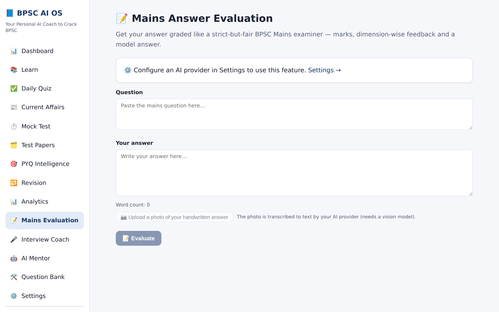
12. Interview Coach
साक्षात्कार कोच
A mock BPSC panel interview by voice — the coach asks a question aloud (browser TTS), you answer by speaking (🎤) or typing, it gives a one-line critique and asks the next. Choose your focus: Bihar-specific, current affairs, graduation/general or situational. Works best in Chrome/Edge; falls back to text-only elsewhere.
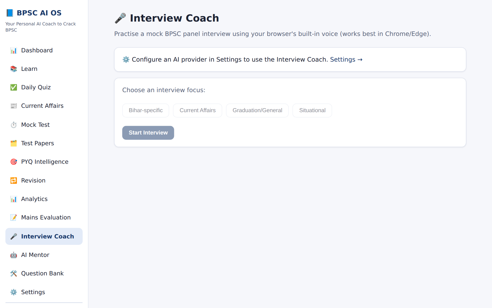
13. AI Mentor
AI मेंटर
Ask any BPSC doubt, any time — answers in your language, exam-focused. Includes 🎤 voice input.
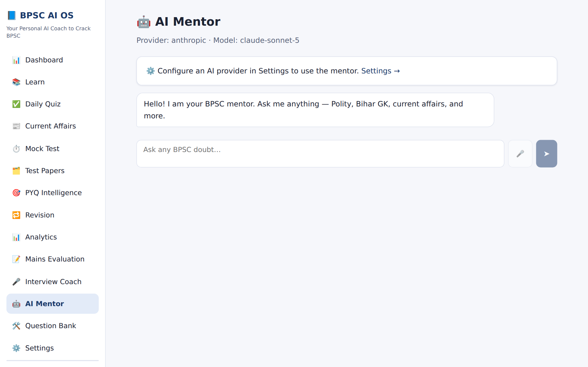
14. Question Bank (Admin)
प्रश्न बैंक (एडमिन)
Grow the question bank that powers quizzes, practice and test papers:
📋 Review queue — scraped/ingested questions arrive as pending; approve ✅ or reject ❌ each (the correct answer is highlighted). Only approved questions ever reach students.
🌐 Scrape — pull questions from a source (built-in sample, or any URL returning a JSON array).
📥 Import — paste a JSON array of questions to add directly.
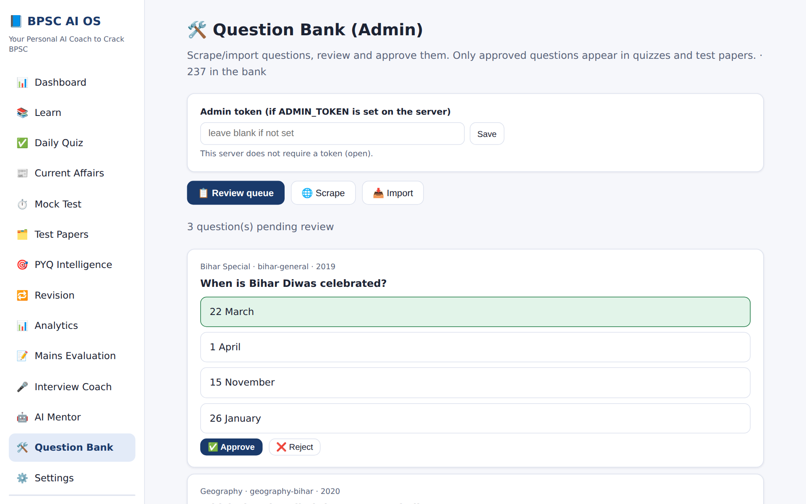
To lock these admin actions on a public server, set the ADMIN_TOKEN environment variable in Coolify and enter the same token once in this page's token field.
15. Settings & AI providers
सेटिंग्स व AI प्रदाता
Choose the AI backend for the Mentor, Mains, Interview, OCR and news-conversion features: Claude (Anthropic) · OpenAI · OpenAI-compatible · Google Gemini · Vertex AI · Local LLM (Ollama). Enter your API key, click Fetch models and pick from the dropdown.
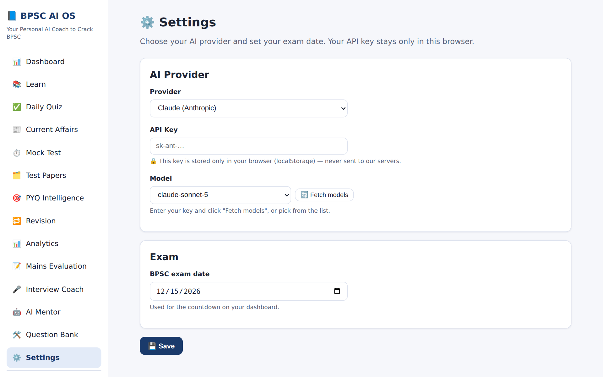
🔒 Your API key is stored only in your browser and sent directly to the provider — it never touches this server.
16. Using the app in Hindi
ऐप हिंदी में
Press हिंदी in the sidebar — the entire interface and all content (chapters, questions, explanations, takeaways) switch instantly.
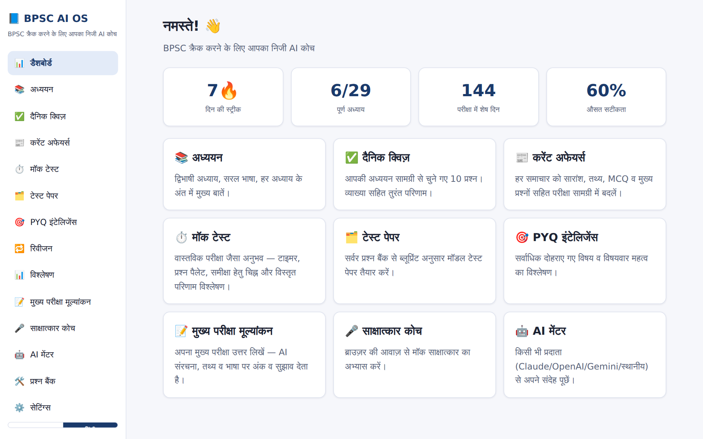
17. Deployment (Coolify / Docker)
परिनियोजन
Coolify (recommended)
New resource → Application → this Git repository, branch main.
Build pack: Docker Compose (auto-detected) or Dockerfile. Either way the app listens on port 3000 — set that as the service port so Traefik routes your domain to it. Do not publish extra host ports.
Add a persistent volume at /data (keeps the question bank across redeploys; the compose file creates it automatically).
Set your domain → Coolify issues HTTPS automatically (needed for PWA install, offline and voice).
Plain Docker (testing)
git clone https://github.com/Premsh101/AgentLearning.git
cd AgentLearning
docker compose -f docker-compose.yml -f docker-compose.standalone.yml up -d --build
# open http://<server-ip>:8080 (change with APP_PORT=9090)
18. FAQ & troubleshooting
सामान्य प्रश्न
Problem
Fix
AI features say “configure a provider”
Settings → choose a provider → paste your API key → Save. Local LLM needs no key (point it at your Ollama URL).
Voice doesn’t work
Use Chrome or Edge over HTTPS (or localhost). Other browsers fall back to text.
Test Papers / PYQ “live” / Practice show an error
Those need the backend — make sure the container is running (/api/health should return ok).
Live News is empty
The server needs outbound internet to reach the PIB feed; press Fetch now, or add a custom feed via the Question Bank admin token + POST /api/news/fetch.
Coolify deploy: “port is already allocated”
You’re on an old compose file — pull latest main: it publishes no host ports.
Question bank reset after redeploy
The /data volume wasn’t mounted — add persistent storage at /data.
Progress lost
Progress lives in the browser’s localStorage — use the same browser/profile, and don’t clear site data.